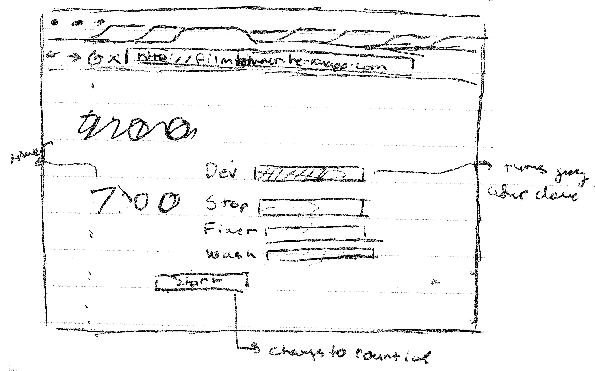
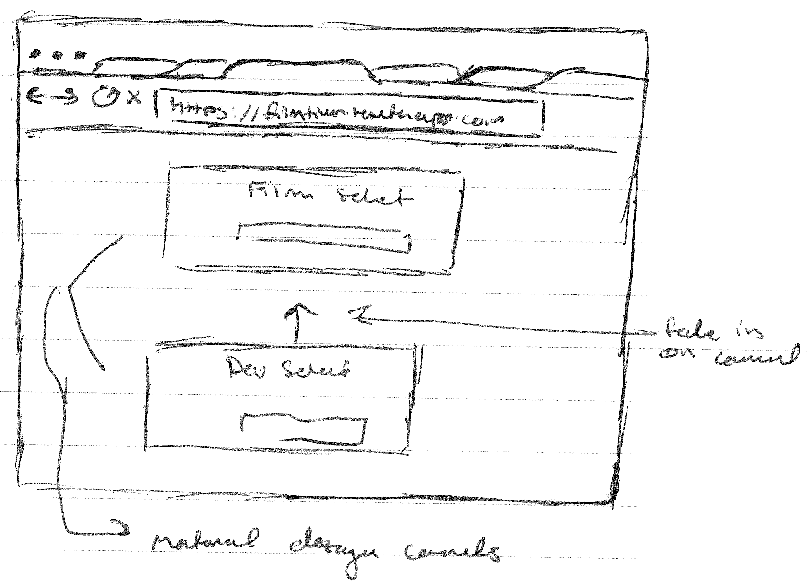
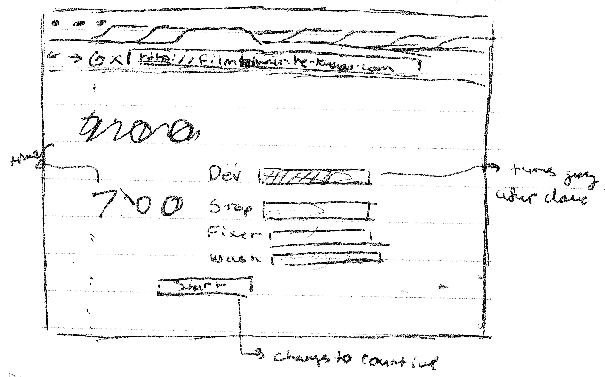
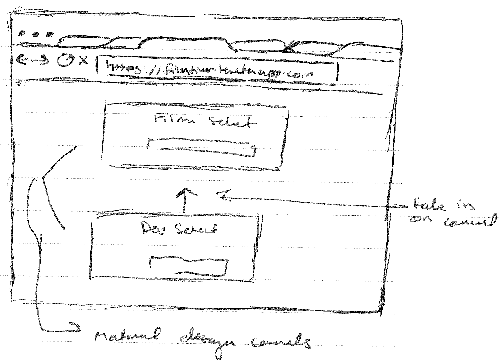
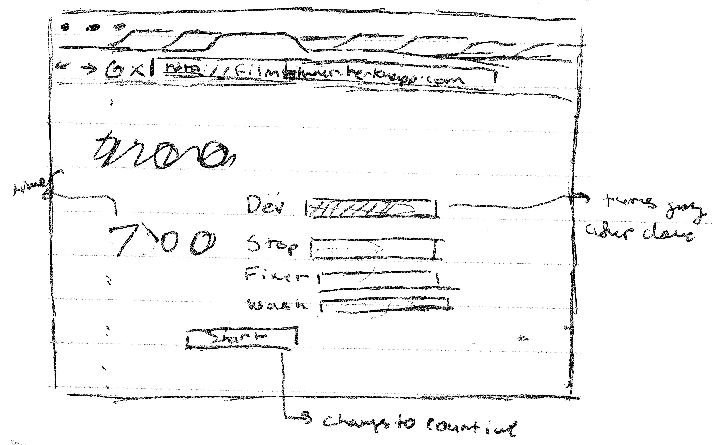
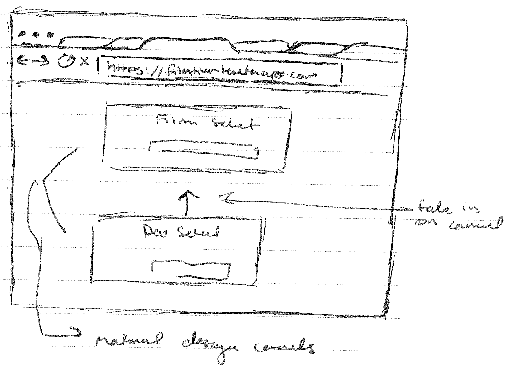

Wire Frames
 



I had a problem. I like developing film, but I hate looking up the times every time I want to develop another roll of film. So I made an application to do that for me.
I built the web application ground up from the database to the final product.


The Massive Dev Chart is the world's largest film development chart. It contains development times for most (over 18,000) combinations of black and white films and developers.
This Web Application makes the use of that chart far easier by providing a basic UI to the chart. It not only provides the user with the time for development but also alerts them when to agitate, and the timings for each chemical.